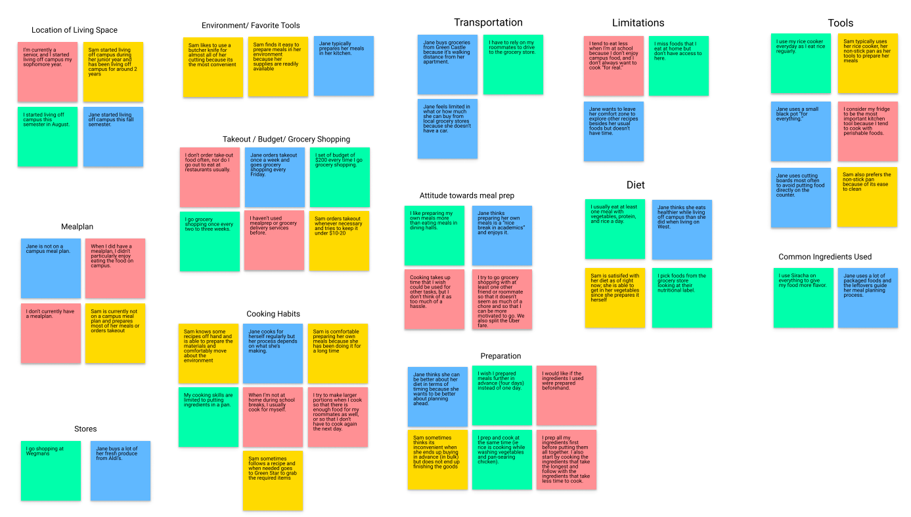
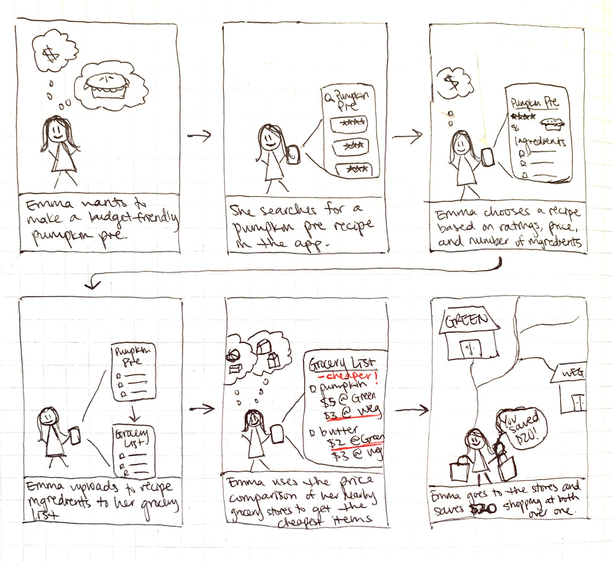
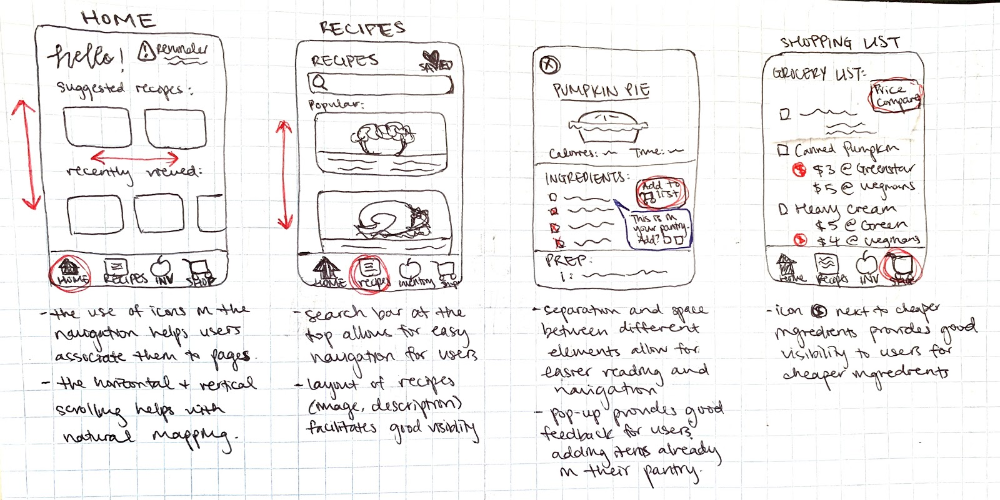

Rethink Ramen
Most college students who live off-campus have to cook for themselves because they aren’t on a meal plan with their university. This transition to independent adult life is difficult to adjust to. Rethink Ramen aims to make meal preparation easier for this user group who may not know how to efficiently use their groceries or plan regularly scheduled meals, which could lead to food waste and unhealthy eating habits.
User Interviews
We first conducted interviews with participants from our user group, college students not on a meal plan, to get a sense of the problems they face in this space. We organized our findings in an affinity diagram.
Some general insights collected:
- • Students prioritize affordability
- • Students tend to eat better (nutritional value, variety) at home
- • Time is a big factor in the preparation (and lack of variety) of meals
From our general insights, we came up with requirements that our app needed to address:
- • Budgeting
- • Meal variety
- • Time management
Design Generation
Upon exploring the existing design space, we found two main groups of solutions, meal preparation apps, and meal delivery services. Each group member came up with 10 innovative ideas for our user group. Given that our class relates to Human-Computer Interaction, we decided to create an app that facilitates our user goals of budgeting, meal variety, and efficient food use.
User Taskflow
User Interface
The final user interface consists of four main screens: home, recipes, inventory, and shopping. The user tasks tested were editing inventory items, finding recipes based on inventory items, adding gorceries to the grocery list, and comparing prices of items.
Nondigital Prototype
Digital Prototype
After making the digital prototype in Figma, we conducted usability tests to observe underlying design problems that we could implement in our final design prototype.
Some design problems we found were:
- • Add button led to the inventory's "add item" (to inventory) page instead of shopping page's "add item" (to cart)
- • Overflow menu icons and checkboxes were hard to tap due to size and lack of feedback was frustrating
Proposed design solutions:
- • Implement "quick add" feature that users can click from a shopping search result to add to their shopping list
- • Overflow menu icons enlarged and redesigned to give more surface area to click
- • Feedback with color (green-success, red-warning) to indicate task completion status